Ottavia
Intelligent personalized guidance
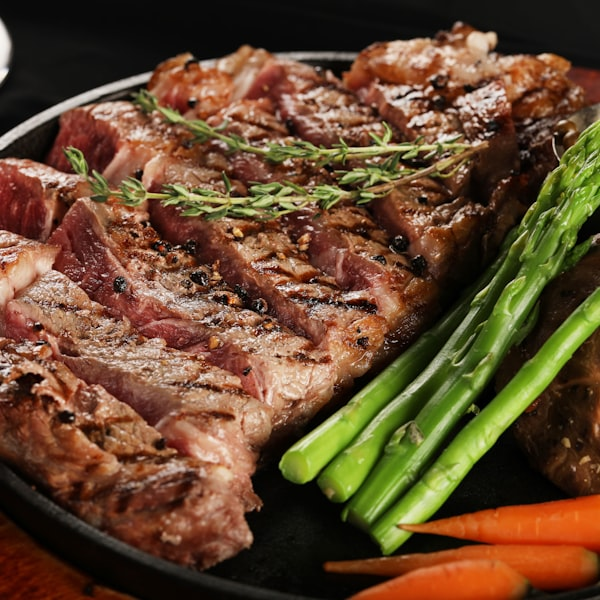
A big protein hit for your recovery day. Here's what's in it:
A large protein load from the steak, with veg for fiber and micronutrients — strong fuel for muscle repair on an easy day.
Solid choice on a recovery day. One tweak: cap any single sitting around 30–40g — beyond that, the body just stores rather than uses it. Spread the rest across an afternoon snack and a moderate dinner.
You were in bed for 7h 10m, asleep for 6h 22m. Stages broke down:
Your wake time was 7:08, about 38 minutes later than your race-week target. That single drift costs more than the 38 minutes — it pushes tonight's sleep onset later too.
Wake-time consistency is the single most reliable lever for sleep quality. Hold 6:30 tomorrow even if you're tired — your sleep system is reading the morning, not the night before.
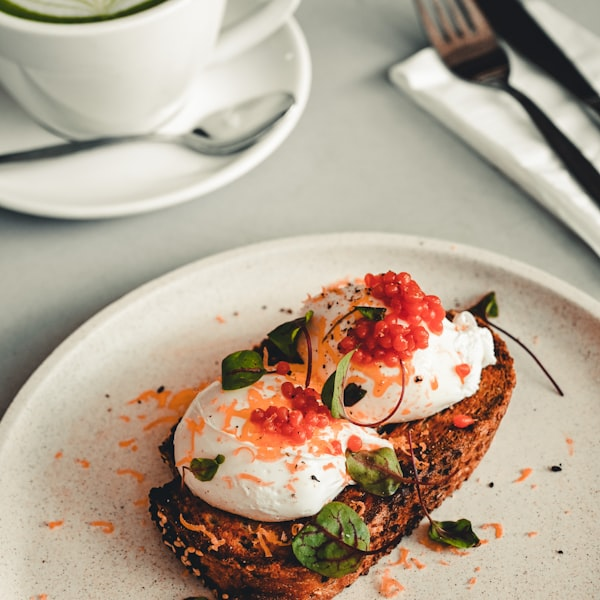
A solid post-run breakfast on a busy morning. Here's what's in it:
A nice carb + protein + fat balance after this morning's easy 5k — enough to carry you through to lunch without slowing down for the school run.
This lands well inside the 60–90 minute recovery window. The egg + toast covers carbs and protein together — exactly what closes the loop on the run. If lunch slips late, add a piece of fruit at 11 to keep energy steady.
You were in bed for 7h 40m, asleep for 5h 50m. Stages broke down:
Wake-ups aside, the quality of the time you did sleep was fine. The lever isn't more hours, it's protecting the wake time so the hours stay solid.
Fragmented sleep is solved by consistency, not by lying in. Hold your 6:15 wake time today, even after a rough night. The body reads the morning more than the night.
You logged it as Zone 1, but here's where the 52 minutes actually landed:
That drift into the middle is the most common pattern I see in your easy days — it feels productive, but it quietly taxes the recovery your one hard session this week depends on.
The polarized model only works if easy is genuinely easy. Keep the slow days slow so the hard days can be truly hard — the middle zone is where most endurance athletes leave adaptation on the table.
With three runs a week, each one has a job. Today's job was easy aerobic, and pushing it turns it into a third moderate day, which is exactly the trap to avoid:
When time is short, the win isn't a faster easy run, it's protecting Saturday's hard session so it can actually be hard. That's where the fitness for your half comes from.
On low volume the temptation is to make every run count by going harder. Resist it — keeping easy days easy is what lets the few hard sessions deliver, even on three runs a week.
You lifted heavy lower-body yesterday, then ran easy today. A little flatness is the strength session doing its job, but here's how the week is actually loading:
The flatness now is fine. What matters is that it clears before Thursday, so the heavy lift and the hard run don't collide. If it lingers, we move the lift earlier next week.
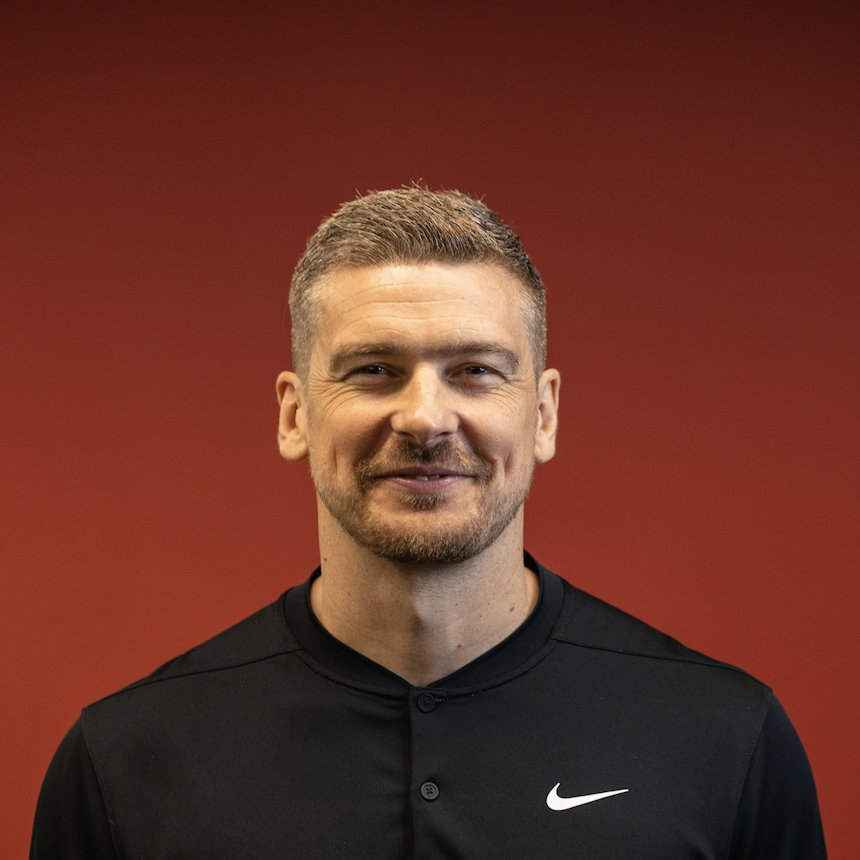
Strength and running compete for the same legs. Place the heavy work so it never lands on top of a quality run, and both keep improving.
You've hit all three runs this week, which is great. But strength is your injury insurance as the runs get longer, and it's the piece that's slipped two weeks running:
It isn't about more work. Two 20-minute sessions at home keep your hips and calves strong enough for the rising mileage. That's what keeps the niggles away.
For a newer runner, a small, consistent strength dose is the highest-value insurance there is. If something has to give, keep the strength, it's what protects the goal.
Toast, honey and banana is about 55g of carbs right before an easy session that was meant to be done low. Nothing wrong with the food, it's the timing:
For an easy aerobic run, doing it on low carb is what nudges the adaptation. A full pre-run feed turns it into just another fuelled easy run. Fine, but it skips the stimulus we'd planned for today.
Train low, compete high. Save the carbs for the sessions that need them. Easy aerobic work done with low availability is where you build the machinery to burn fat and spare glycogen.
The answer depends on the run's job, and today's job is easy aerobic:
Running your easy mornings on empty is fine and even helps your body get better at using fat for fuel. The one to protect is Saturday's long run, that one earns a real pre-run breakfast.
Fuel for the work required. Easy runs can be done low; quality runs get fed. That contrast is what builds adaptation without blunting the sessions that matter.
Nitrate, the active part of beetroot, helps most in sustained hard efforts where the oxygen cost of holding pace matters. Today's run is easy aerobic, so the timing is off:
Nothing wrong with the shot itself. It's just spent on a session that doesn't tax the system nitrate helps. Save it for the long run or a hard race-pace effort, taken 2 to 3 hours before.
Match the aid to the demand. Nitrate is for sustained high-intensity work, not easy days. Used on the right session, it can lower the oxygen cost of holding pace.
Beetroot, which works through nitrate, helps in sustained hard efforts, not easy aerobic runs. The answer depends on the run's job:
For a first half, the basics matter far more: eating enough, hydrating, and running consistently. A coffee before a hard run is the one simple aid actually worth it for you right now.
Match the aid to the demand. For a first half, food, water and training beat any shot. Keep it simple now, and revisit supplements only if you start chasing a time.
Feeling strong and letting an easy run drift to 7:40 is the most common way masters runners blunt their own training. The easy run's job is recovery and aerobic base, not to feel fast:
The risk isn't one quick run, it's the pattern. When easy days creep up, the hard days never fully land and the niggles start. Rein it back and Tuesday's reps will be sharper for it.

Keep easy days genuinely easy. The easy run builds the engine, it isn't the day to prove anything. Save the effort for the sessions built for it.
Adding a run and getting calf soreness is the classic early-runner injury setup. For a first half, staying healthy matters far more than the extra miles:
Sore calves are a warning, not a weakness. Drop back to three runs, add ten minutes of calf raises and squats instead, and let the tissue catch up. That protects your race far better than pushing through.
Consistency beats volume for new runners. Injuries, not missing miles, are what end most first attempts. Add strength before you add a run.
Here's what today actually was in your week:
A run that feels slow and forgettable is the easy day doing its job. The trouble only starts when the easy days quietly turn into efforts.

In Iten, the thing that stuns every visitor is how slowly the best runners on earth jog their easy days. Slow easy running isn't a problem to fix, it's the discipline that makes the hard days count.
Here's where your week actually stands:
The half is built by running most weeks, not every planned run. A missed day with three kids is normal life, not a setback.
The runners who last aren't the ones who never miss, they're the ones who keep it simple and keep coming back. Run for the joy of it and the consistency takes care of itself.
Apply the thinking of experts you trust to your meals, training, recovery, and everyday choices — through guidance adapted to you.
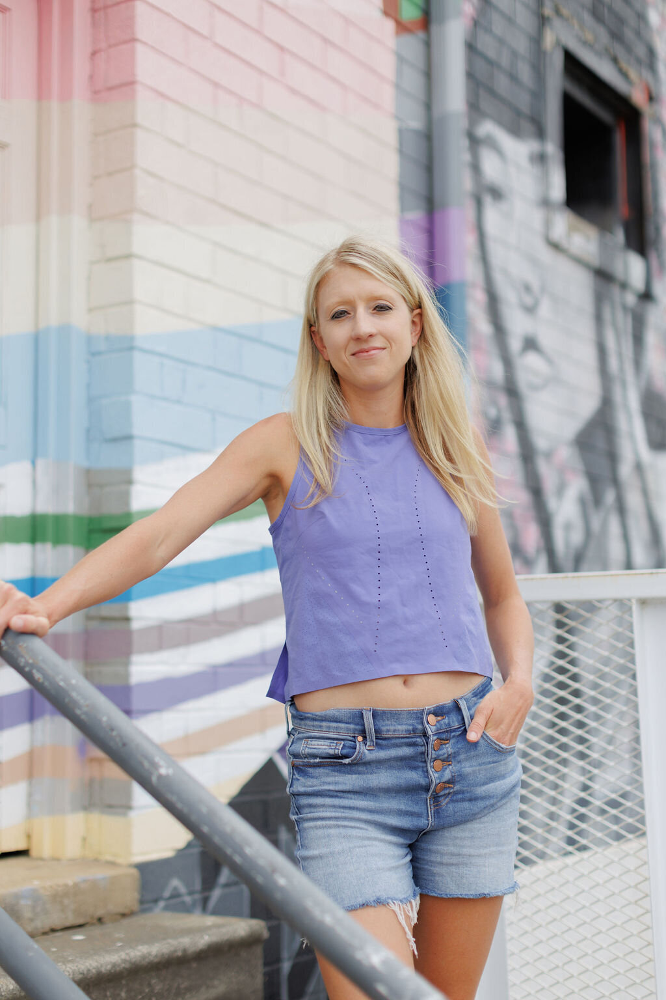
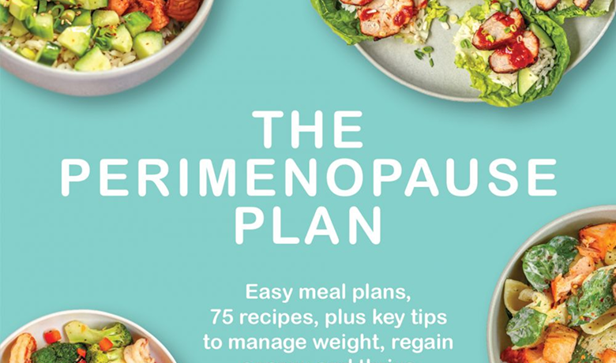


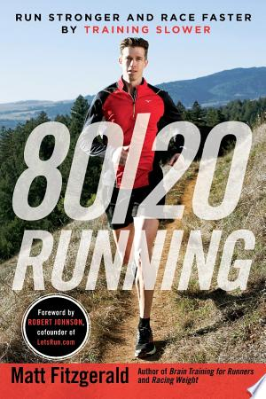

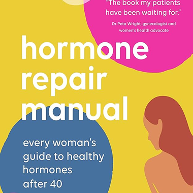
Find your match · Quiz
Take a 3-minute test and we'll pair you with the Ayurveda Expert that fits your constitution.
Or take the full quiz →A day with
Challenge
16oz on an empty stomach. One habit, every day for 28 days. Track your check-ins, see how your energy shifts.
Matthew Walker
Sleep Science
Christie Aschwanden
Recovery Science
Trio · Hormones & cycle
Three perspectives on perimenopause: diet, hormones, and recovery.
Faye James · Mary Claire Haver · Lara Briden
Weekend reset · Outdoor
30-day promise
Backed by clinical sleep science. If your HRV doesn't improve, we'll extend free.
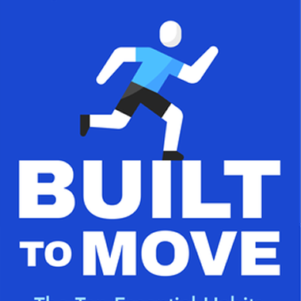
Today with
Tonight
Wind-down by 22:00 — lights out 22:30
Now
Read Matthew's morning protocol (3 min)
Tomorrow morning
Review your HRV trend with Matthew's framework
7-day program with Matthew Walker
Next: Day 4 — Caffeine timing & the HRV cost
Every Expert. Every book, episode, article, and lecture they've made — all visible without tapping in.
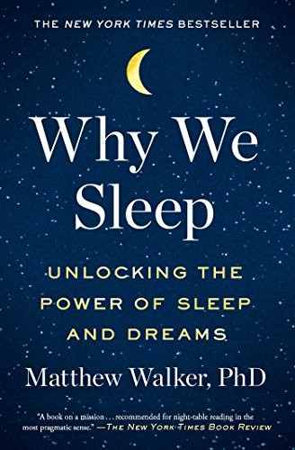
Friday · 21:43
Tonight · 22:00
Wind-down now — your HRV dropped 12% last night, target lights-out by 22:30
with Matthew WalkerActive in your week
Because you've been exploring
Fresh this week
For you
Featured
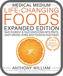
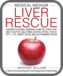
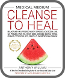
Browse all
Sleep
Author of Why We Sleep · UC Berkeley professor
Educational, not medical advice
Tap the chip in any answer to see where his contribution came from (book chapter, podcast episode, or article).
Sleep Scientist · UC Berkeley
1 book · 64 episodes · 12 articles · 4.9★
Your sleep, HRV, training and habits — every day.
His books, podcasts and research shape what Ottavia tells you.
Every answer that uses his work shows a chip. Tap it to see the source — book chapter, episode, or article.
"Your HRV dropped 12% last night. Matthew's framework: chase tonight, not last night — target lights-out by 22:30."
with Matthew WalkerGet full access to Matthew's library
8.7K followers · 4.9★ rating
Educational, not medical advice
The foundational book
Unlocking the Power of Sleep and Dreams
The science of caffeine and sleep
Why your HRV crashes after late nights
REM, recovery, and the athletic edge
How sleep debt compounds over a training week
Wind-down protocols for endurance athletes
Matthew Walker is a professor of neuroscience and psychology at the University of California, Berkeley, founder of the Center for Human Sleep Science, and former professor of psychiatry at Harvard Medical School. He has been featured on 60 Minutes, Nova Science, the BBC, and NPR, and is the author of the international bestseller "Why We Sleep."
Anthony William
Psychic expert
Shalane Flanagan
Running nutrition
Christie Aschwanden
Recovery science
Endurance Coach & Author
The science of endurance — applied to every workout, every race, every recovery day.
Cancel anytime. Manage in Experts Hub.
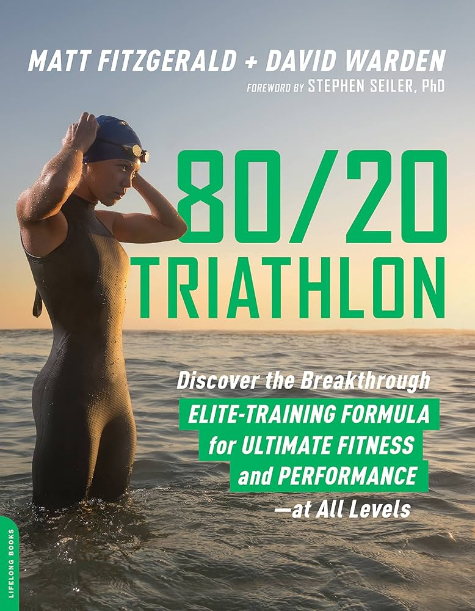
The breakthrough elite-training formula for ultimate fitness and performance · with David Warden · Lifelong Books · 2018
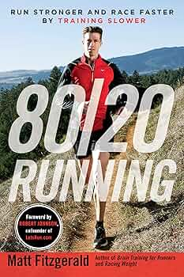
Run Stronger and Race Faster by Training Slower · VeloPress · 2014
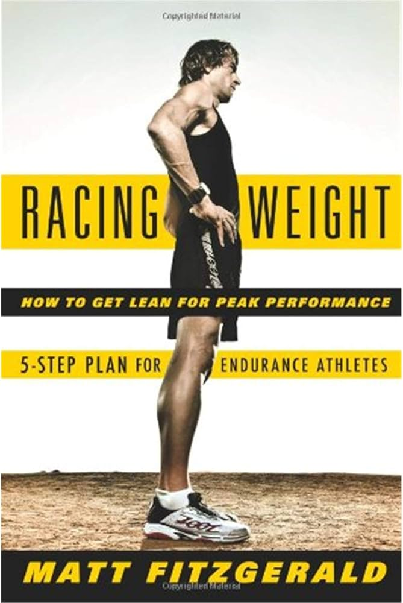
A 4-week weight-loss plan for endurance athletes · VeloPress
Matt is an American endurance sports writer and coach, co-founder of 80/20 Endurance. Over 25 years he's authored 30+ books exploring the science, nutrition, and psychology of endurance performance — and the 80/20 principle (80% low-intensity, 20% high-intensity) that's now standard in serious endurance training. Based in Marin County, California.
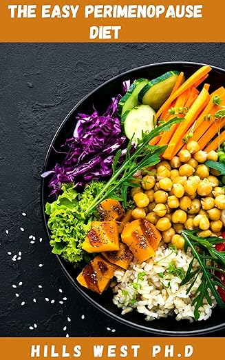
Luteal phase, day 22. Sleep was 6h 12m. HRV down 8% vs your 30-day. Strength day planned — today's plan protects the volume and prioritizes protein + magnesium tonight, per Stacy's published protocols.
Synthesized from the published work of Dr Stacy Sims. Educational, not medical advice.
Luteal phase, day 22. Sleep was 6h 12m. HRV down 8% vs your 30-day. Strength day planned.
Synthesized from her published work. Apply however fits your day.
Synthesized from the published work of Dr Stacy Sims. Educational, not medical advice.
Two things stand out. Your 100K is 11 weeks out, and there's a pattern in your training Matt's framework would want us to look at first.
None of this changes your plan yet.
I can show you what next week would look like with his lens, or we can talk through any of these first.
One quality session. One long run. The rest deeply easy. Here's how it sits across the week:
Easier than easy. Pure aerobic flush — keep HR under 130. Reset the legs after Sunday's long.
Your one hard session this week. Threshold work to sharpen the engine — drawn from Matt's 20% allocation.
True easy. Conversational. If HR drifts above 142, slow down — this is where aerobic base lives.
Short. 6 × 20s strides at the end to keep neuromuscular sharpness without taxing the system.
No running. Walk if you want. Saturday's long needs you fresh.
The main work of the week. Time on feet at aerobic effort. Front-load carbs and electrolytes — practice 100K race fueling.
Shake out yesterday's long. Pure aerobic. I'll re-check HRV Sunday night and adapt next week.
Three shifts from what you would have done:
It's adaptive — if Saturday's HRV is still down, I'll shorten the long to 1:45 and push the full distance to the following weekend.
Your Z2 runs are where your body learns to burn fat, so heading out fasted is usually fine, and useful for the 100K. Two things tip today toward eating a little:
If you feel flat in the first 10 minutes, half a banana or a couple of dates is plenty. Save real fueling for Tuesday's quality session.
You held 138 bpm on average, under your 142 ceiling for 91% of the run. Clean Z2.
Refuel in the next 30 minutes, protein and carbs, and keep tomorrow gentle. Tuesday is your quality day.
You slept 6h 12m last night, lighter than you'd like, and your HRV is still under baseline. Your legs feel strong, but your nervous system is still clearing Sunday's long run — so today's about easy aerobic, nothing that digs deeper.
Here's how I'd shape the day, based on your sleep, training load and where you are in the plan:
Aerobic base at a conversational pace. Keep HR under 142 — if it drifts, slow down.
Within 30 minutes of finishing, to kickstart repair while your body's primed.
You ran a fluid deficit yesterday — steady sips keep recovery moving.
Lights out by 22:30 — bank the sleep your nervous system is still asking for.
You got ~7 hours last night, broken twice by the kids, but your resting HR is back at baseline — your body's adapting to the new training. Today's a midweek easy day, sized to what fits the morning.
Here's how I'd shape the day, around the kids and Saturday's tempo:
Conversational pace, after school drop-off. Short and steady — consistency beats distance this week.
Yogurt + berries while the breakfast dishes pile up. Quick, real, done.
A glass at every kid-meal handoff — easy to remember, easy to hit.
Phone outside the bedroom — sleep is where this week's training actually sticks.
You averaged 6h 45m the last three nights, and your wake time has slipped from 6:30 to 7:10 on weekends. Training is dialed in. The biggest gain from here isn't another hard session, it's a steadier sleep window so you arrive at the start line fresh.
Here's how I'd shape today, starting Aric's 7-day Sleep Prescription on Day 1:
Same wake time every day this week, weekends included. Step outside or by the window for 10 minutes to anchor your body clock.
Aerobic, conversational. Race-week priority is freshness, so nothing that digs into recovery.
Caffeine has a long tail. Your afternoon espresso is still working at lights-out.
Park tomorrow's plan on paper before 7 PM so race-week logistics don't surface at 2 AM.
Screens away, lights down, last email sent. The link between bed and sleep gets stronger the more you protect it.
Aim for the same lights-out every night this week. Consistency, not duration, is the win.
You averaged ~6h 20m over the last week, broken once or twice by the kids most nights. We won't fix duration with three small ones in the house, but we can make the hours you get count more.
Here's the day, with Aric's 7-day Sleep Prescription shaped around your real evenings:
Pick a wake time you can keep even after a broken night. A steady morning is the one reliable signal your sleep system needs this week.
After school drop-off, conversational pace. Short and steady — consistency matters more than distance this week.
Earlier than feels needed. The lift you get later costs you the night.
Tomorrow's mental load on paper before the kids' wind-down so the to-do list doesn't start the moment you lie down.
Once the kids are down: phone in another room, lights low. Short and repeatable beats long and skipped.
Match time in bed to the sleep you actually get this week, so it consolidates instead of fragmenting.
A small simple carb 20 min before your run — half a banana or two crackers. Just enough to take the edge off without sitting heavy.
Sixty minutes at an easy aerobic effort — HR 132–142 bpm, conversational throughout. Builds the endurance base your 100K depends on.
Inside the 60–90 min recovery window — ~25g carb + 8g protein. Nancy's shorthand for "closes the loop on this morning's run."
Kick off the day's 2L target early. Nancy's check: pale-straw urine every 2–4 hours means you're on track.
Your biggest protein hit of the day — aim for ~40g to stay on track toward 140g. Pair it with slow carbs so you're fuelled, not heavy.
Halfway to today's 2L by early afternoon.
Light movement to aid digestion and circulation.
Light hips and calves to help yesterday's long run clear. Active recovery — nothing strenuous; finish looser, not tired.
Keep protein topped up between lunch and dinner.
Finish the day's hydration target.
Tomorrow's a quality day, so fill the tank tonight: plenty of carbs plus ~30g protein. Eat ~3 hours before bed. Light on fiber so the gut feels light for tomorrow.
Settle your nervous system before bed.
Bank the sleep your nervous system is asking for.
Aric's race-week anchor: hold one wake time, weekends included. Your sleep system reads consistency more than duration.
Step outside within 30 minutes of waking. Morning light is the strongest cue your body has for "the day has started."
Conversational pace, HR 132–142 bpm. Race-week priority is freshness, so we trim before we add.
Caffeine's half-life is ~6 hours. Anything after 2 PM is still circulating at lights-out and shows up as lighter, more fragmented sleep.
Half of today's 2L target. Steady sips, not big glasses, so it doesn't cost you a 3 AM bathroom trip.
If you need it: 20 minutes max, before 4 PM. Anything longer or later eats into tonight's sleep pressure.
Light hips and calves. Active recovery, finish looser, not tired.
Tomorrow's plan on paper for 5 minutes, before 7 PM. Race-week logistics that surface at 2 AM are usually things you didn't write down.
Carbs plus ~30g protein, finished at least 3 hours before bed. Eating later than that pushes core temp back up and delays sleep onset.
Last email sent, screens away, lights down. The link between bed and sleep gets stronger the more you protect this band.
Same lights-out every night this week. Consistency, not duration, is the race-week win.
Half a banana or two crackers, 20 min before. Tiny is fine — the point is just a carb signal so the run feels easier than running on empty.
Thirty-five minutes after drop-off, conversational throughout. Builds the aerobic base your half marathon stands on — consistency over speed.
Inside the 60–90 min recovery window — carbs + protein together. Same combo as Nancy's chocolate-milk shorthand, just sized to your morning.
Kick off the day's 1.5L target. Nancy's check: pale-straw urine every 2–4 hours means you're on track.
Your biggest protein moment of the day. Pair with whole grains so you're fueled, not bloated for school pickup.
Halfway to your 1.5L for the day.
Light movement to break up the desk hours.
Active commute counts — 12 min each way at a brisk pace. The "extra movement" your week needs without adding a workout.
Cheese stick + apple. Kid-snack convergence — protein for you, fruit for them.
Finish the day's hydration target.
Saturday's tempo run is two days out — eat what the family eats, just add a runner-portion of the protein. Pasta + chicken works. Light on fiber so the gut feels light for Saturday.
Once the bedtime routine ends, the wind-down clock starts. Lights low, phone away.
Aim for seven solid — the kids may have other plans.
Aric's rule for fragmented sleep: hold the wake time even if the night was broken. A steady morning is the most reliable signal you can give your sleep system.
Step outside or open the blinds for 5–10 min as the kids wake up. Morning light is the strongest cue your body has for "this is the start of the day."
After school drop-off. Conversational pace, short and steady. Consistency beats volume this week.
Earlier than feels needed. With sleep already fragmented, the afternoon coffee costs you more than it gives.
Get outside between school runs. Light movement + daylight aids tonight's sleep onset.
If last night was rough: 20 minutes max, before 3:30 PM. Set a timer. Anything longer or later eats tonight's sleep pressure.
Tomorrow's mental load on paper for 5 minutes, before the kids' wind-down. The to-do list doesn't get to start at 10:30 PM.
Once the kids are down: phone in another room, lights low. Short and repeatable beats long and skipped.
Match time in bed to the sleep you actually get this week, so it consolidates instead of fragmenting further.
Today is an easy day, and it should feel almost too easy. Keep HR under 142 and hold a full conversation. This is the 80% that builds your aerobic engine for the 100K.
Within 30 minutes of finishing, while your body's primed to restock. Oats with banana, honey and Greek yogurt covers carbs to refill the tank and protein to repair.
Kick off the day's 2.5 L target right after your run. Add a pinch of electrolytes this morning since you sweated through the 70 minutes.
A quick effort rating helps me confirm you actually stayed easy. If it felt above a 4, we eased too little.
Keep restocking for tomorrow's hard session. Rice or potatoes with chicken and greens — slow carbs so you're fuelled, not heavy, for the rest of the day.
On track for 2.5 L. Steady sips through the afternoon, not big glasses at once.
Easy days aren't filler. They're when your body absorbs the hard sessions. Stay off your feet where you can and keep the legs fresh for Thursday.
Thursday is your one genuinely hard session this week: 5 × 4 min at threshold. It only delivers if today stays easy, so we keep the contrast sharp.
Recovery between hard days happens in your sleep. Aim for 8 hours tonight so Thursday's session lands on fresh legs and a fresh system.
One of your two easy runs this week. Keep it conversational, even if 30 minutes feels too short to "count." On three runs a week, easy days protect the one that's hard.
Yogurt with berries while the breakfast dishes pile up. Easy run or not, a little protein after helps you recover and keeps energy steady through the morning.
Aim for 1.5 L across the day. A glass at each kid-meal handoff is the easiest way to remember it without thinking about it.
A real plate while the kids are at school: eggs or chicken with whole grains and veg. Steady energy for the afternoon, nothing heavy.
Roughly halfway to 1.5 L. Keep the bottle within reach during the afternoon shuttle.
The afternoon pickup on foot is easy aerobic movement too. It adds to your week without touching the energy Saturday's hard session needs.
Your one quality session this week is Saturday: a steady tempo block while the kids are at activities. Everything easy between now and then is in service of that run.
Broken sleep with the kids is a given, so consistency matters more than a perfect eight hours. Keep a steady lights-out and let the easy days do their job.
Keep today's run genuinely relaxed. You're pairing it with a strength session later, so the run is the warm-up, not the workout.
Within 30 minutes of finishing, while your body's primed to restock. Oats with banana, honey and Greek yogurt covers carbs to refill the tank and protein to repair.
Kick off the day's 2.5 L target. Add a pinch of electrolytes after the morning sweat.
The day's real session. Squats, hip hinge and calf raises, heavy and low-rep. This is what keeps your stride powerful and your legs durable through the build.
Carbs and protein together after lifting, the same window as after a hard run. It's what turns the session into actual strength.
A quick symmetry check: a hop or calf raise on each side. It flags any left-right gap before it turns into a niggle.
No heavy legs tomorrow. Today's lift is placed so it clears before your quality run, keeping the contrast between hard and easy sharp.
Strength adapts while you sleep. Aim for 8 hours tonight so today's lift turns into the durability you're after.
No gym needed. Squats, lunges, calf raises and a plank. The basics that keep knees and hips strong as your runs get longer.
Yogurt with berries while the breakfast dishes pile up. A little protein after helps you recover and keeps energy steady through the morning.
Aim for 1.5 L across the day. A glass at each kid-meal handoff is the easiest way to remember it without thinking about it.
A real plate while the kids are at school: eggs or chicken with whole grains and veg. Steady energy for the afternoon, nothing heavy.
While the kettle boils, stand on one leg, then the other. A tiny habit with real payoff for stability and even strength side to side.
No strength Friday or Saturday, so your longest run lands on fresh legs. The strength is here to support that run, never to tire you out before it.
Broken sleep with the kids is a given, so a steady bedtime matters more than a perfect eight hours. The strength work adapts on the downtime.
Run this one before breakfast, water only. Today is an easy aerobic day, so low carb availability is the point, it drives the adaptations that make you a better fat-burner.
You held off through the run, so eat properly now: carbs and protein together. Eggs, oats, fruit. The low window was the run itself, not the whole day.
A fasted run still needs fluid. Start the day's 2.5 L now, with a pinch of electrolytes after the morning sweat.
Steady carbs with protein and veg. You're restocking glycogen for tomorrow's quality session, which needs a full tank to go well.
On track for 2.5 L. Steady sips through the afternoon.
Tuesday is your quality session: carbs before and during. You can't hit the intensity on empty, so tomorrow is the opposite of today, fully fuelled.
Fill the tank tonight so tomorrow's quality session lands on full glycogen. Rice or pasta with protein and veg, eaten a few hours before bed.
After drop-off. An easy run doesn't need a big breakfast first, a normal light start is fine. Save the real fuelling for Saturday's long run.
Once you're back: a balanced breakfast with carbs and protein. Yogurt, fruit, toast. Nothing strict, just steady fuel for the morning with the kids.
Aim for 1.5 L across the day. A glass at each kid-meal handoff is the easy way to remember.
A real plate while the kids are at school: eggs or chicken with whole grains and veg. Steady energy, nothing heavy.
Your long run is the quality session this week. Carbs the night before and a small carb snack before you head out, that's the one that earns real fuelling.
A normal balanced dinner with the family. No special prep tonight, your fuelling focus this week is simply Saturday.
Today's threshold reps need a full tank. A carb-forward breakfast with some protein, eaten a few hours before, sets the session up.
About 0.3 g/kg, taken with the carb meal and plenty of water, 2 to 3 hours before the reps. It buffers the acid that builds in hard efforts. Taking it with food is what keeps your gut settled.
Start the day's 2.5 L now, with a pinch of electrolytes. A well-hydrated session also helps the bicarbonate sit better.
About 3 mg/kg, timed so it peaks for the 10 AM session. The most reliable legal aid for a focused hard effort, and it stacks well with the bicarbonate today.
Your one genuinely hard effort this week. This is exactly the demand bicarbonate and caffeine are for, which is why today gets them and your easy days don't.
Within the hour after the reps: carbs and protein together to restock and repair. Eggs, oats, fruit.
Tuesday is easy aerobic, so it's food and water only. No bicarb, no caffeine timing to think about. Saving the aids for the hard days is what keeps them working.
On track for 2.5 L. Steady sips through the afternoon.
Restock glycogen after the hard session. Rice or pasta with protein and veg, eaten a few hours before bed.
After drop-off. An easy run needs no supplements at all. If you like a coffee beforehand, that's the one simple aid worth having, but it's optional today.
Once you're back: a balanced breakfast with carbs and protein. Yogurt, fruit, toast. Nothing strict, just steady fuel for the morning with the kids.
Aim for 1.5 L across the day. A glass at each kid-meal handoff is the easy way to remember.
A real plate while the kids are at school: eggs or chicken with whole grains and veg. Steady energy, nothing heavy.
For your first half, a coffee before the start is plenty. Beetroot and the rest are for seasoned racers chasing a time, not your goal right now.
A normal balanced dinner with the family. No special prep tonight. Eating enough across the week is what actually moves your half.
Today is an easy aerobic day. Run it at a genuine conversation pace, slower than feels natural. This run builds the engine and sets the legs up for the plyos later.
Per Pete Magill · the easy run builds the engine
A normal balanced plate after the run: oats, eggs, fruit. Nothing special needed for an easy day, just steady fuel.
Begin the day's 2.5 L now with a pinch of electrolytes. Steady sips beat gulping it all at once.
A short plyometric circuit: skips, bounds, and quick low hops. Per Pete this is what restores the elastic power that fades with age and sharpens your economy far more than junk miles.
Per Pete Magill · plyos rebuild aging legs' spring
Chicken or eggs with whole grains and veg. Steady energy to support the strength work this afternoon.
Progressive calf raises, single-leg work and foot strength. Per Pete this is non-negotiable past 40: it builds the exact tissue that keeps breaking down, so the niggles stop dictating your season.
Per Pete Magill · build the tissue, don't just rest it
On track for 2.5 L. Steady sips through the afternoon.
Protein, carbs and veg a few hours before bed. Nothing strict, just enough to help the legs recover from the strength and plyo work.
A comfortable, conversational run. If you can chat the whole way, the pace is right. This easy running is what quietly builds your base for the half.
Per Pete Magill · easy running builds the base
Once you're back: a balanced breakfast with carbs and protein. Yogurt, fruit, toast. Nothing strict, just steady fuel for the morning with the kids.
Aim for 1.5 L across the day. A glass at each kid-meal handoff is the easy way to remember.
A real plate while the kids are at school: eggs or chicken with whole grains and veg. Steady energy, nothing heavy.
While the kids do homework: squats, calf raises and a plank. Per Pete, ten minutes twice a week is what keeps new runners off the injury list, and it beats adding a fourth run.
Per Pete Magill · add strength before you add miles
A normal balanced dinner with the family. No special prep tonight. Eating enough across the week and staying consistent is what actually moves your half.
Today is an easy day, so run it slower than feels right. In Iten even the elites jog their easy days gently. Patience now is speed on race day.
Per Adharanand Finn · the Kenyan way
An easy breakfast to refill the tank: oats, fruit and yogurt does the job after a relaxed morning run.
Begin the day's 2.5 L now. Steady sips, nothing complicated.
The Kenyans treat recovery as seriously as the running. Stay off your feet where you can, even a short nap. Today's work is letting the easy miles settle.
Per Adharanand Finn · rest is part of the work
Tomorrow is your single harder session this week. Work hard, but finish knowing you had a little more. That restraint is the Kenyan secret, not emptying the tank.
Per Adharanand Finn · restraint over emptying out
Nothing fancy. A calm evening and a decent sleep is what lets tomorrow's effort feel good. Simplicity is the whole approach.
After drop-off, run by feel and ignore the pace. Notice the morning, come back wanting to do it again. That is the whole goal today.
Per Adharanand Finn · run for the joy of it
Yogurt and fruit while the morning gets going. Easy, real, done.
Aim for 1.5 L across the day. A glass at each kid-meal handoff is the easy way to remember.
No second session, no making up miles. One easy run today is plenty. The simplicity is what keeps running in your life for years.
Per Adharanand Finn · simplicity over more
Your one longer run this week is Saturday, while the kids are busy. Keep it relaxed and let it be the calm hour that's just yours.
Per Adharanand Finn · the long run, unhurried
Rest is part of the plan, not a gap in it. A calm evening is exactly what a sustainable running life is made of.
You slept light last night and your HRV is still under baseline — recovery isn't there yet.
Later today
Synthesized from the published work of Matt Fitzgerald. Educational, not medical advice.
Luteal phase, day 22. Sleep was 6h 12m. HRV down 8% vs your 30-day. Strength day planned.
Z2 day today. HRV down and late luteal — protecting the legs and saving intensity for Thursday is drawn from Stacy's perimenopause framework.
3 eggs + greens + smoked salmon. Target 30g protein within an hour of waking — based on her hormone-supporting protocol for women 40+.
Heavy compound lifts, 3–5 rep range. Drawn from her published framework — strength is the lever for women 40+, not more cardio.
Protein + carb within 30 min. The anabolic window is shorter in perimenopause (per her research). Greek yogurt + berries + sourdough.
Salmon + roasted broccoli + sweet potato. Half plate veggies, palm of protein, omega-3 source.
300mg magnesium glycinate. Drop the bedroom to 18°C. Lights out by 22:30 — 7.5h target to absorb today's strength work.
Synthesized from the published work of Dr Stacy Sims. Educational, not medical advice.